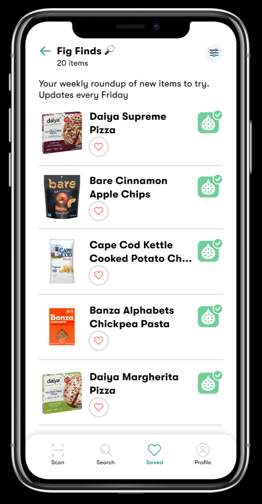

Fig-Food is Good
Software Engineer

BundL
Lead Engineer and Co-Founder

Hi there!
I'd like to use this website to tell you a bit more about my projects, and dive into some more detail beyond my resume.
Click on one of my experiences/projects below to learn more
Software Developer
Fig is a Sequoia backed startup that's mission is to help people with dietary restrictions shop with greater ease. Diets are extremely complex, and with Fig's mobile app, users can create a deitary profile and simply scan items in the store to determine whether or not the food they are looking at fits their Fig! Their user base at the time of my internship was approximately 30,000 users.
Fig approached me with an issue. They wanted to make their mobile app more proactive in engaging with their users as the Fig experience was entirely passive at the time. My job was to tackle this problem end to end. A high level summary of the summer is as follows:
An algorithm to determine, based on a users diet, what type of food items they would be interested in as well as advanced sql queries to return the top food items matching the optimal description
An API endpoint leveraging this algorithm to return 10 unique food recommendations based on a users diet.
Route: //TODO
A front end UI component to deliver these recommendations to the user
Front-End Component/Delivery:
Co-founder and Lead Developer
BundL is a centralized loyalty rewards wallet that integrates directly into your preferred payment method. BundL has two components: a user facing mobile application and a business facing dashboard. On the dashboard, merchants can sign up and create a loyalty rewards program from scratch with components such as a points to dollar ratio, thresholds/rewards, coupons, and timed campaigns. On the user side, once you link your preffered payment method to BundL (via Plaid Link), your rewards will be directly pushed to your linked payment form as you spend, and tracked in the mobile application, allowing you to maximize the usage of your points.
Being one of the three cofounders of BundL, I was responsible for:
Co-Developer
Note: this algorithm is still a work in progress, but it's been incredibly fun writing so I wanted to include it as I worked on it.
The goal of this algorithm is to answer the question: for a given user on a given day, what is the percent chance of them making a transaction at location X.
The algorithm predicts a confidence level that a user will make a transaction at location Y by computing the weighted average of categorical analysis.These categories weights adjust and learn depending on the outcome of the algorithms results. Meaning if a historical analysis proves accurate for a user, the weight of the historical analysis will increase for the next round. Conversely, if a categorical analysis performs poorly, Its weight will decrease in the computation of the final confidence interval.Each of these analysis dives into a very specific type of analysis and returns a confidence interval of a purchase being made based on that specific category. Within these categorical analysis, we develop learned weights for different factors put into said analysis that will adjust over time.
Simply, I had 85 gift cards and kept losing track of their balances. So I built a mobile app that allowed me to scan each of them into a wallet so that I could keep track of their balances more easily as I spent. The home page compiled balances I owned to each company, and then you could click further into the company section to view each of my cards and their values.
Apologies for the UI design, I mostly cared about functionality for this project.
//TODO Images